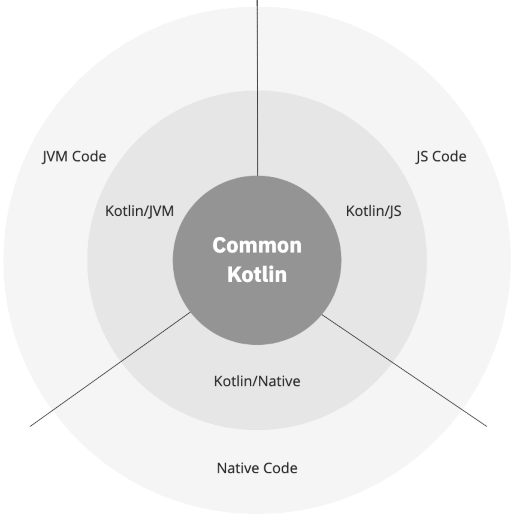
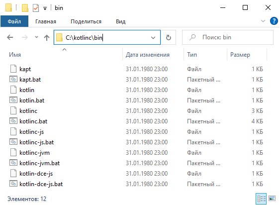
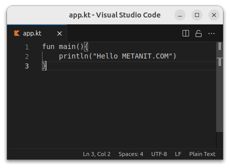

Kotlin представляет современный, статически типизированный и один из самых быстроразвивающихся языков программирования, созданный и развиваемый компанией JetBrains. Kotlin можно использовать для создания самых разных приложений. Это и приложения для мобильных устройств - Android, iOS. Причем Kotlin позволяет писать кроссплатформенный код, который будет применяться на всех платформах. Это и веб-приложения, причем как серверные приложения, которые отрабатывают на стороне на стороне сервера - бекэнда, так и браузерные клиентские приложения - фронтенд. Kotlin также можно применять для создания десктопных приложений, для Data Science и так далее.
Таким образом, круг платформ, для которых можно создавать приложения на Kotlin, чрезвычайно широк - Windows, Linux, Mac OS, iOS, Android.
Самым популярным направлением, где применяется Kotlin, является прежде всего разработка под ОС Android. Причем настолько популярным, что компания Google на конференции Google I/O 2017 провозгласила Kotlin одним из официальных языков для разработки под Android (наряду с Java и C++), а инструменты по работе с данным языком были по умолчанию включены в функционал среды разработки Android Studio начиная с версии 3.0.
Официальный сайт языка - https://kotlinlang.org/, где можно найти самую последнюю и самую подробную информацию по языку.
Первая версия языка вышла 15 февраля 2016 года. Хотя сама разработка языка велась с 2010 года. Текущей версией языка на данный момент является версия 1.9, которая вышла в июле 2023 году.
Свое название язык Kotlin получил от названия острова, который расположен близ города Санкт-Петербург, в котором в.
Kotlin испытал влияние многих языков: Java, Scala, Groovy, C#, JavaScript, Swift и позволяет писать программы как в объектно-ориентированном, так и в функциональном стиле. Он имеет ясный и понятный синтаксис и довольно легок для обучения.
Но Kotlin - это не просто очередной язык программирования. На сегодняшний день это целая экосистема:
Ядро этой экосистемы - Common Kotlin, которое включает в себя собственно язык, основные библиотеки и базовые инструменты для построения программ.
Для взаимодействия с конкретной платформой имеются предназначенные для этой платформы версия Kotlin: Kotlin/JVM, Kotlin/JS и Kotlin/Native. Эти специфические версии представляют расширения для языка Kotlin, а также специфичные для конкретной платформы бибилиотеки и инструменты разработки.
Также стоит отметить, что Kotin развивается как opensource, исходный код проекта можно посмотреть в репозитории на github по адресу https://github.com/JetBrains/kotlin/.
Перед началом работы с Kotlin следует отметить, что нам потребуется JDK (Java Development Kit). Про установку Java можно прочитать на данном сайте https://metanit.com в статье Установка Java. Однако знать сам язык программирования Java необязательно. Достаточно лишь знать, что в общем случае Kotlin работает поверх виртуальной машины Java (JVM). Благодаря этому Kotlin может использовать библиотеки, написанные на Java. Аналогично из программы на Java можно запускать код Kotlin. Однако Kotlin/Native позволяет писать приложения, которые компилируются в нативный код и которые выполняются без JVM.
Также стоит отметить, что так как одно из самых популярных направлений разработки на Kotlin представляет разработка под Android, то на этом сайте https://metanit.com также имеется руководство по созданию мобильных приложений на Kotlin
Создадим первую программу на языке Kotlin. В дальнейшем при работе с Kotlin мы будем использовать специальную программу - среду разработки Intellij IDEA, которая во многом облегчает написание приложений на Kotlin. Однако эта среда довольно тяжеловесна, и в реальности для создания приложений нам нужно всего два компонента - текстовый редактор для набора кода программы и компилятор для компиляции кода в приложение.
В качестве текстового редактора можно взять любой понравившийся. Например, я буду ориентироватья на Visual Studio Code.
Загрузить компилятор непосредственно для самого языка Kotlin можно по адресу https://github.com/JetBrains/kotlin/releases/latest/.
В самом низу страницы под заголовком Assets мы можем найти общую версию компилятора, версии компилятора Kotlin/Native для разных операционных систем, а также исходный код. Нас интересует общая версия компилятора, которая называется по шаблону
kotlin-compiler-x.x.x.zip, где x.x.x - это номер версии. Например, в моем случае это файл kotlin-compiler-1.9.22.zip:
Загрузим и распакуем из архива папку kotlinc. В распакованном архиве в папке bin мы можем найти утилиту kotlinc - этои есть компилятор Kotlin. Кроме того, здесь также располагается приложение kotlin, которое выполняет скомпилированный код:
Стоит отметить, что на Linux, например, на Ubuntu, Kotlin можно установить через пакетный менеджер snap с помощью команды
sudo snap install kotlin --classic
Теперь определим на жестком диске каталог для файлов с исходным кодом. Например, в моем случае каталог будет находиться по пути c:/kotlin. В этом каталоге создадим новый файл, который назовем app.kt. Расширение kt - это расширение файлов на языке Kotlin.
Далее определим в этом файле код, который будет выводить некоторое сообщение на консоль:
1 2 3 | fun main(){ println("Hello METANIT.COM")} |
Точкой входа в программу на Kotlin является функция main. Для определения функции применяется ключевое слово fun, после которого идет название функции - то есть main. Данная функция не принимает никаких параметров, поэтому после названия функции указываются пустые скобки.
Далее в фигурных скобках определяются собственно те действия, которые выполняет функция main. В данном случае внутри функции main выполняется другая функция - println(), которая выводит некоторое сообщение на консоль.
Откроем командную строку. Вначале с помощью команды cd перейдем к папке, где находится файл app.kt. Затем для компиляции программы введем следующую команду:
c:\kotlinc\bin\kotlinc app.kt
В данном случае мы передаем компилятору c:\kotlin\bin\kotlinc для компиляции файл app.kt. (Чтобы не писать полный путь к компилятору, путь к нему можно добавить в переменную PATH в переменных среды). В результате в папке с исходным кодом появится файл AppKt.class - это скомпилированный код в виде бай-кода для виртуальной машины Java.
Теперь запустим приложение с помощью второй утилиты - kotlin:
c:\kotlinc\bin\kotlin AppKt
И консоль должна нам вывести сообщение "Hello METANIT.COM". Полный вывод:
C:\Windows\system32>cd c:\kotlin c:\kotlin>c:\kotlinc\bin\kotlinc app.kt c:\kotlin>c:\kotlinc\bin\kotlin AppKt Hello METANIT.COM c:\kotlin>